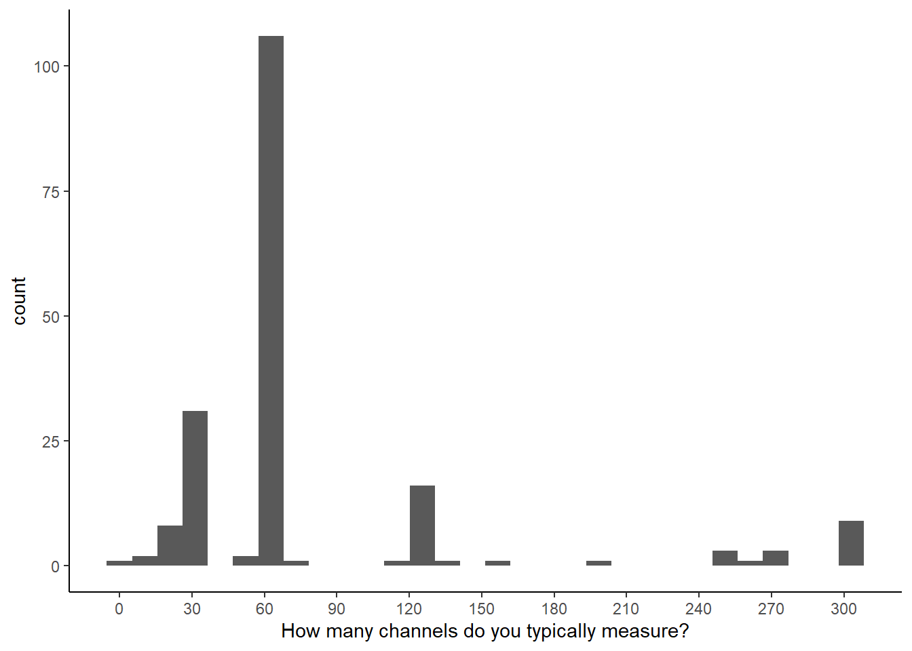
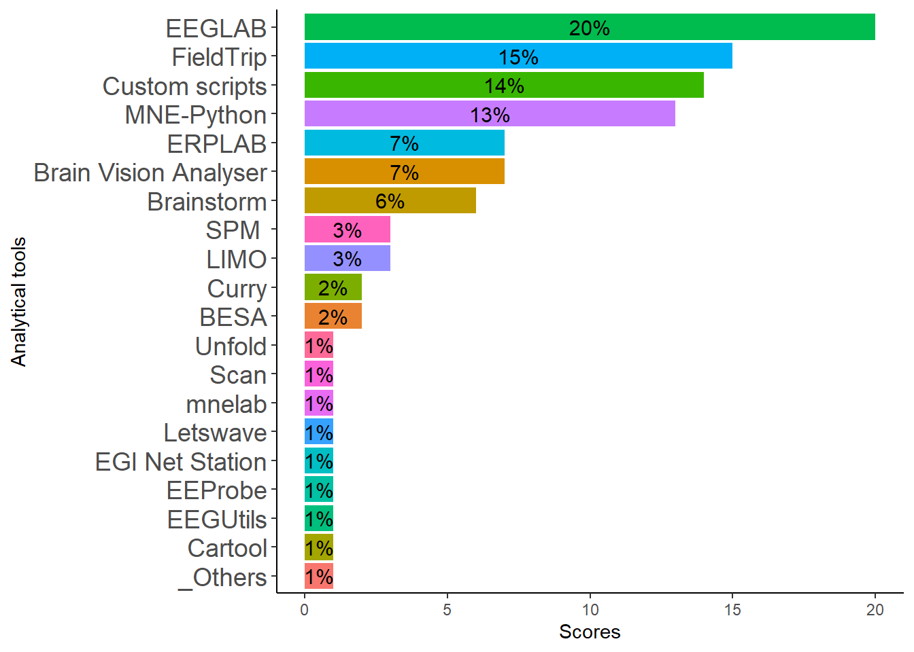
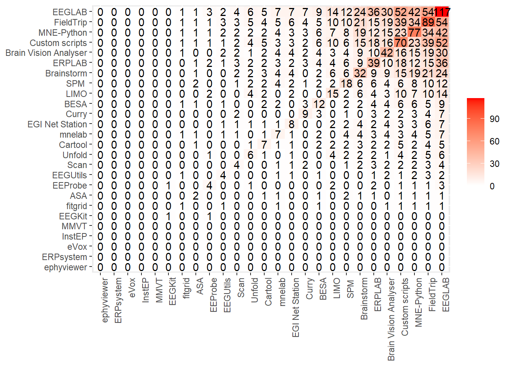
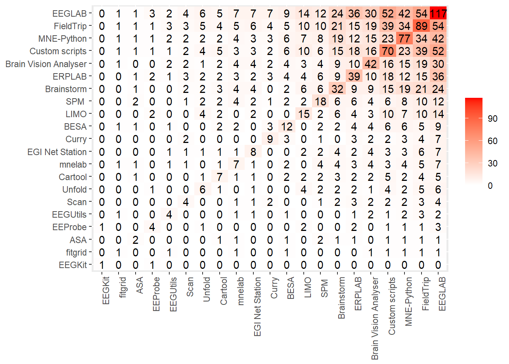
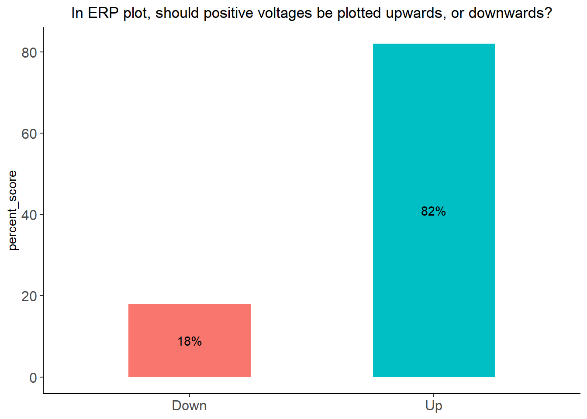
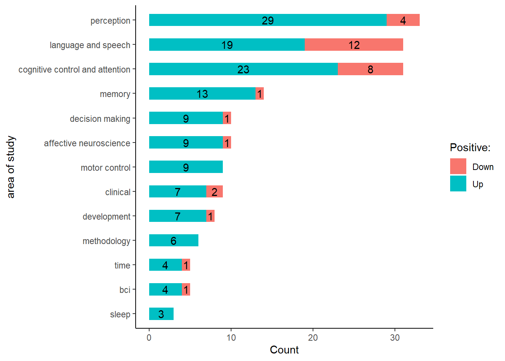

# upload to the git
library(readxl)
library(foreach)
library(stringr)
library(dplyr)
library(tokenizers)
library(data.table)
library(ggplot2)
library(plyr)
library(quanteda)
library(SemNetCleaner)
library(purrr)
library(tidytext)
library(tm)
library(topicmodels)
library(SnowballC)
library(Matrix)
library(text2vec)
library(tidyr)
library(kableExtra)
library(stringr)exploration
Setup
data <- read_excel("data/results-survey3.xlsx")
data <- data[1:121] %>%
filter(.[[18]] !='Yes') # not analysed any EEG methodChannels
How many channels do you typically measure?
data %>% ggplot(data = ., aes_(as.name(names(data)[23]))) +
geom_histogram() + scale_x_continuous(breaks=seq(0, 300, 30)) +
labs(x ="How many channels do you typically measure?") + theme_classic()Warning: `aes_()` was deprecated in ggplot2 3.0.0.
ℹ Please use tidy evaluation idioms with `aes()``stat_bin()` using `bins = 30`. Pick better value with `binwidth`.
How many channels do you typically measure?
data %>% filter(.[[24]] < 500) %>% ggplot(data = ., aes_(as.name(names(data)[24]))) +
geom_histogram() + scale_x_continuous(breaks=seq(0, 300, 30))+
labs(x ="How many channels of those you measured do you typically analyse?") + theme_classic()`stat_bin()` using `bins = 30`. Pick better value with `binwidth`.
# plots should be combinedSoftware usage
frequency
na.omit(data[51]) %>% nrow()[1] 21other <- c(rep("Custom scripts",each=9), "4DBTi", rep("letswave", 3), "mTRF", "RAGU", "IGOR Pro", "EEGProcessor", "ELAN", "WinEEG") %>% table(.) %>% data.frame(.) %>% rename_at(vars(colnames(.)), ~ c("soft", "sum_scores"))vec <- names(data[25:50]) %>% str_split_i(., "\\? \\[", 2) %>% str_sub(., 1, -2)
software <- data[25:50] %>%
rename_at(vars(colnames(.)), ~ vec) %>%
mutate_at(vars(vec), function(., na.rm = FALSE) (x = ifelse(.=="Yes", 1, 0)))
d <- data.frame(rowSums(t(software))) %>% tibble::rownames_to_column(., "soft") %>%
rename_at(vars(colnames(.)), ~ c("soft", "sum_scores")) %>%
rbind(., other) %>% dplyr::group_by(soft) %>% dplyr::summarise(sum_scores = sum(sum_scores)) %>%
arrange(., desc(sum_scores))
d %>% filter(sum_scores >= 1) %>% mutate(soft = ifelse(sum_scores >= 3, as.character(soft), "_Others")) %>% group_by(soft) %>%
dplyr::summarise(sum_scores = sum(sum_scores)) %>%
ggplot(data = ., aes(y = reorder(soft, sum_scores), x= sum_scores, fill = soft)) +
geom_bar(stat="identity") + ylab("Soft") +
geom_text(aes(label = sum_scores),
hjust = -0.2) + theme_classic() + theme(legend.position="none")
cooccurrence
# how to order by diagonal matrix
# how to add others
software <- data[25:50]
ch <- colnames(software)
ch1 <- foreach(i = ch) %do% str_split_i(i, "\\? \\[", 2)
ch1 <- foreach(i = ch1) %do% str_sub(i, 1, -2)
d1 <- foreach(i = colnames(software)) %do% ifelse(software[i]=="Yes", 1, 0)
c <- crossprod(matrix(unlist(d1), ncol = 26))
rownames(c) <- ch1
colnames(c) <- rownames(c)
diag.order <- order(diag(c), decreasing = FALSE)
mat_reordered <- c[diag.order, diag.order]
melt(mat_reordered) %>% ggplot(., aes(x=Var1, y=Var2)) +
geom_tile(aes(fill = value)) +
geom_text(aes(label = value)) +
scale_fill_gradient(low = "white", high = "red") +
theme(legend.title = element_blank(),
axis.title=element_blank(),
axis.text.x = element_text(angle = 90, vjust = 1, hjust=1)) 
Important features
data[52:60] %>% rename_with(., ~str_split_i(colnames(data[52:60]), "\\? \\[", 2) %>%
str_sub(., 1, -2) ) %>%
mutate_at(c(colnames(.)),
funs(recode(.,
"Very important"= 2, "Important"= 1, "Neutral"= 0,
"Low importance"= -1, "Not at all important" = -2 ))) %>%
colSums(., na.rm =T) %>% data.frame(.) %>% tibble::rownames_to_column(., "Feature") %>%
filter(!is.na(Feature)) %>%
arrange(desc(.)) %>% rename_at(vars(colnames(.)), ~ c("Feature", "sum_scores")) %>% group_by(Feature) %>%
dplyr::mutate( mean = round(sum_scores / nrow(data), 2)) #%>% kbl() # A tibble: 9 × 3
# Groups: Feature [9]
Feature sum_s…¹ mean
<chr> <dbl> <dbl>
1 Flexible tweaking of plot attributes (colors, linewidths, margi… 292 1.56
2 Presentation/publication ready figures 226 1.21
3 Reproducibility of interactively generated or modified plots 223 1.19
4 Generating plots by coding 221 1.18
5 Combine with a custom plot created outside of the toolbox (as s… 116 0.62
6 Zooming or panning within a plot 109 0.58
7 Speed of plotting 80 0.43
8 Interactive selection of time-ranges or electrodes e.g. via Sli… 72 0.39
9 Generating plots by clicking (GUI) -68 -0.36
# … with abbreviated variable name ¹sum_scoresfeature <- data[52:60] %>% rename_all(., ~str_split_i(colnames(data[52:60]), "\\? \\[", 2) %>%
str_sub(., 1, -2) ) %>%
mutate_at(c(colnames(.)),
funs(recode(.,
"Very important"= 2, "Important"= 1, "Neutral"= 0,
"Low importance"= -1, "Not at all important" = -2 ))) %>%
pivot_longer(cols = everything(), names_to = "name", values_to = "value") %>%
mutate(index = as.integer(factor(name)))
#feature %>% distinct(., index, name) %>% arrange(., index)
feature %>% #filter(index %in% c(2, 6, 7, 4)) %>%
ggplot() +
geom_density(aes(x = value, fill = str_wrap(name)), bw = 0.5) +
labs(x = "score", fill="Features") + theme_classic() +
theme(legend.position = "none", legend.key.height=unit(2, "cm")) + facet_wrap(~str_wrap(name, 20))
feature %>% filter(index %in% c(2, 6, 7, 4)) %>%
ggplot() +
geom_density(aes(x = value, color = str_wrap(name, 20)), bw = 0.5) +
labs(x = "score", color = "Features") + theme_classic() +
theme(legend.position = "none",
legend.key.height=unit(2, "cm"),
axis.text.x = element_text(size = 12),
strip.text = element_text(size = 14)) +
facet_wrap(~str_wrap(name, 20)) + labs(x="Scores on Likert scale", y="Density") Warning: Removed 18 rows containing non-finite values (`stat_density()`).
feature %>% filter(index %in% c(2, 6, 7, 4)) %>%
ggplot() +
geom_density(aes(x = value, color = str_wrap(name, 20)), bw = 0.5) +
labs(x = "score", color = "Features") + theme_classic() +
theme(
legend.key.height=unit(2, "cm"),
axis.text.x = element_text(size = 12),
strip.text = element_text(size = 14)) +
labs(x="Scores on Likert scale", y="Density") Warning: Removed 18 rows containing non-finite values (`stat_density()`).
feature %>% filter(index %in% c(8, 9)) %>%
ggplot() +
geom_density(aes(x = value, color = str_wrap(name, 20)), bw = 0.5) +
labs(x = "score", color ="Features") + theme_classic() +
theme(
legend.key.height=unit(2, "cm"),
axis.text.x = element_text(size = 12),
strip.text = element_text(size = 14)) +
labs(x="Scores on Likert scale", y="Density") Warning: Removed 7 rows containing non-finite values (`stat_density()`).
feature %>% filter(index %in% c(1, 3, 5)) %>%
ggplot() +
geom_density(aes(x = value, color = str_wrap(name, 20)), bw = 0.5) +
labs(x = "score", color ="Features") + theme_classic() +
theme(
legend.key.height=unit(2, "cm"),
axis.text.x = element_text(size = 12),
strip.text = element_text(size = 14)) +
labs(x="Scores on Likert scale", y="Density") Warning: Removed 13 rows containing non-finite values (`stat_density()`).
Familiarity with plots
Recognition
vec <- c("line", "butterfly", "topo", "topo_array", "topo_map", "erp_image", "parallel", "channel_image")
familiar <- data[61:68] %>% rename_at(vars(colnames(.)), ~ vec) %>%
mutate_at(vars(vec), function(., na.rm = FALSE) (x = ifelse(.=="Yes", 1, 0)))
data.frame(rowSums(t(familiar))) %>% tibble::rownames_to_column(., "plot") %>%
rename_at(vars(colnames(.)), ~ c("plot", "sum_scores")) %>%
arrange(., desc(sum_scores)) %>%
ggplot(data = ., aes(y = reorder(plot, sum_scores), x= sum_scores, fill=plot)) +
geom_bar(stat="identity") + ylab("plot") + theme_classic() +
theme(legend.position="none", plot.title = element_text(hjust = 0.5)) +
ggtitle("Select ERP plot you are familiar with") 
Plotting
vec <- names(data[ , grepl( "Have you ever plotted" , names(data))])do_vec <- function(vec, data){
t1 <- table(data[vec[1]])
for (i in 2:length(vec)) {
t <- table(data[vec[i]])
t1 <- rbind(t1, t)
}
rownames(t1) <- array(paste0("t_", 1:length(vec)))
return(t1)
}
tab <- do_vec(vec, data) %>% data.frame() %>% tibble::rownames_to_column(., "plots") %>%
gather(., answer, score, `N.A`:`Yes`, factor_key=TRUE) %>%
mutate(answer = str_replace(answer, 'N.A', "No"))
tab %>%
ggplot(., aes(x = plots, y = score, fill = answer)) +
geom_bar(position = "dodge", stat = "identity") +
labs(x = "Category", y = "Value", fill = "Group") +
theme_classic() + theme(plot.title = element_text(hjust = 0.5)) +
ggtitle("Have you ever plotted this kind of figure?")Recognition and plotting
vec <- names(data[ , grepl( "Have you ever plotted " , names(data))]) #%>% str_split_i(., "\\.....", 2)
plot_names <- c("line", "butterfly", "topo", "topo_array", "topo_map", "erp_img", "parallel", "channel_img")
do_vec <- function(vec, data, plot_names){
t1 <- table(data[vec[1]])
for (i in 2:length(vec)) {
t <- table(data[vec[i]])
t1 <- rbind(t1, t)
}
rownames(t1) <- plot_names #array(paste0("t_", 1:length(vec)))
return(t1)
}
tab <- do_vec(vec, data, plot_names) %>% data.frame() %>% tibble::rownames_to_column(., "plots") %>%
gather(., type, plotted, `N.A`:`Yes`, factor_key=TRUE) %>%
filter(type == "Yes") %>% dplyr::select(-type)
familiar <- data[61:68] %>% rename_at(vars(colnames(.)), ~ plot_names) %>%
mutate_at(vars(plot_names), function(., na.rm = FALSE) (x = ifelse(.=="Yes", 1, 0)))
data.frame(rowSums(t(familiar))) %>% tibble::rownames_to_column(., "plot") %>%
rename_at(vars(colnames(.)), ~ c("plots", "recognized")) %>% merge(., tab) %>%
gather(., type, score, recognized:plotted, factor_key=TRUE) %>%
ggplot(., aes(x = reorder(plots, -score), y = score, fill = type)) +
geom_bar(position = "dodge", stat = "identity") +
labs(x = "Plot type", y = "Number of users", fill = "Level of familiarity\nwith plot") +
theme_classic() + geom_text(aes(label = score, group = type), position = position_dodge(width = .9), vjust = -0.2) + theme(plot.title = element_text(hjust = 0.5)) +
ggtitle("Familiarity with plots")
Up or down
table(data[79]) %>% data.frame() %>% rename_at(vars(colnames(.)), ~ c("position", "scores")) %>%
ggplot(., aes(x = position, y = scores, fill = as.factor(scores))) +
geom_bar(position = "dodge", stat = "identity", width=0.5) + theme_classic() +
theme(axis.title.x=element_blank(), legend.position="none", plot.title = element_text(hjust = 0.5)) +
geom_text(aes(label = scores, group = position), position = position_dodge(width = .9), vjust = -0.2) +
ggtitle("In ERP plot, should positive voltages be plotted upwards, or downwards?")
Error bars
table(data[74]) %>% data.frame() %>% rename_at(vars(colnames(.)), ~ c("position", "Scores")) %>%
ggplot(., aes(x = position, y = Scores, fill = as.factor(Scores))) +
geom_bar(position = "dodge", stat = "identity", width=0.5) + theme_classic() +
theme(axis.title.x=element_blank(),
legend.position="none",
axis.text = element_text(size = 12),
plot.title = element_text(hjust = 0.5)) +
geom_text(aes(label = Scores, group = position), position = position_dodge(width = .9), vjust = -0.2) +
ggtitle("In your paper, did you published ERP plot with error bars?")
data[75] %>% filter(!is.na(.)) %>% table() %>% data.frame() %>% rename_at(vars(colnames(.)), ~ c("position", "scores")) %>%
ggplot(., aes(x = position, y = scores, fill = as.factor(scores))) +
geom_bar(position = "dodge", stat = "identity", width=0.5) + theme_classic() +
theme(axis.title.x=element_blank(),
legend.position="none",
axis.text = element_text(size = 12),
plot.title = element_text(hjust = 0.5)) + ylab("Scores") +
geom_text(aes(label = scores, group = position), position = position_dodge(width = .9), vjust = -0.2) +
ggtitle("In your figure, what did error bars depicted?")
data[76] %>% filter(!is.na(.)) %>% table()G03Q15[other]. What did the error bars depict in your figure? [Other]
68% CI, which is close to SEM under normality
1
95% ci over channel means
1
i'm not sure but i think it was sem
1
median absolute deviaton or quantiles
1
Sd
1
SEM, corrected for within-participant design
1 Baseline
periods
table(abs(data[77])) %>% data.frame() %>% dplyr::rename(baseline = !!names(.)[1]) %>%
ggplot(data = ., aes(x = baseline, y= Freq)) +
geom_bar(stat="identity") + xlab("Recomended baseline in msec") +
scale_y_continuous(breaks=seq(0, 60, 5)) + theme_classic() +
theme(legend.position="none", plot.title = element_text(hjust = 0.5)) +
geom_text(aes(label = Freq, group = baseline), position = position_dodge(width = .9), vjust = -0.2)
justification
# If you don't want to provide a number on previous question, please, provide a justification
# depends on what??
# manual categorization of depending
j <- data %>%
dplyr::rename(q = !!names(.)[78]) %>% filter(!is.na(q)) %>% dplyr::select(q) %>%
mutate(q = tolower(q)) %>% mutate(q = gsub('depends in|depending on', 'depends on', q),
dependson = ifelse(grepl("depends|depend", q), q, NA)) %>%
separate(dependson, into = c("a","b"), sep = "depends on |depend on ") %>%
dplyr::select(-a) %>%
dplyr::rename(dependson = b) #%>% Warning: Expected 2 pieces. Missing pieces filled with `NA` in 1 rows [50].j %>% filter(is.na(dependson)) %>% select(-dependson)# A tibble: 18 × 1
q
<chr>
1 minimum 200ms for erps and theta or beta power
2 should match the duration of baseline-correction
3 as a rule of thumb, i would plot at least 1/3 of the duration (post-stimulus…
4 half of the illustrated task interval
5 in general i would always try to plot the full baseline period used for base…
6 the same duration as the one used for baseline correction
7 at least 300, preferably more
8 put down 100, but that's just what i typically use, might be diff for differ…
9 at least the baseline window used for the baseline correction?
10 in this case it has sense as the -100 : 0 ms is not flat
11 1/3 to 1/2 of the post-stimulus time plotted
12 i would plot the same baseline period as the one used for baseline correction
13 i would recommend to plot the baseline period corresponding to the baseline-…
14 in general, i think it should be roughly the same length as the time window …
15 assuming the baseline is -250 to 0 ms, i would like to see activity before t…
16 the actual baseline length you have in the experiment
17 ideally, the entire duration for the baseline correction should be depicted
18 it depends - at least as long as the period you use for correction (which ma…j %>% filter(!is.na(dependson)) %>% select(dependson)# A tibble: 33 × 1
dependson
<chr>
1 "the design of course"
2 "the topic"
3 "the study. if you have interstimulus interval of 1 second and you expect to…
4 "the experiment and research question"
5 "the rest period between the measured evoked responses. e.g. it can be very …
6 "the analysis"
7 "paradigm, 100-300 ms range preferable"
8 "the task design"
9 "the type of response (eg for mrcps response is seen before actual movement …
10 "the task design, paradigm and signal of interest."
# … with 23 more rows #View()Colorbars
table(data[117]) %>% data.frame() %>% rename_at(vars(colnames(.)), ~ c("position", "scores")) %>%
ggplot(., aes(x = position, y = scores, fill = as.factor(scores))) +
geom_bar(position = "dodge", stat = "identity", width=0.5) + theme_classic() +
theme(axis.title.x=element_blank(), legend.position="none", plot.title = element_text(hjust = 0.5)) +
geom_text(aes(label = scores, group = position), position = position_dodge(width = .9), vjust = -0.2) +
ggtitle("Are you aware of perceptual controvericies of colorbars?")
table(data[118]) %>% data.frame() %>% rename_at(vars(colnames(.)), ~ c("position", "scores")) %>%
ggplot(., aes(x = position, y = scores, fill = as.factor(scores))) +
geom_bar(position = "dodge", stat = "identity", width=0.5) + theme_classic() +
theme(axis.title.x=element_blank(), legend.position="none", plot.title = element_text(hjust = 0.5)) +
geom_text(aes(label = scores, group = position), position = position_dodge(width = .9), vjust = -0.2) +
ggtitle("Do you know about two-dimensional colorbars?")
rbind(table(data[117]) %>% data.frame() %>%
rename_at(vars(colnames(.)), ~ c("answer", "scores")) %>%
mutate(questions = "Awareness about\ncontrovercies of\ncolorbars")%>%
mutate(percent_score = round(scores / sum(scores) * 100)),
table(data[118]) %>% data.frame() %>%
rename_at(vars(colnames(.)), ~ c("answer", "scores")) %>%
mutate(questions = "Awareness about\n2d colorbars") %>%
mutate(percent_score = round(scores / sum(scores) * 100))
) %>%
ggplot(., aes(x = percent_score, y = questions, fill = answer)) +
geom_col(stat = "identity", width = 0.5) +
geom_text(aes(label = paste0(percent_score, "%", "\n(", answer, ")")),
position = position_stack(vjust = 0.5), size = 4) +
theme_classic()+
theme(plot.title = element_text(hjust = 0.5),
axis.text = element_text(size = 12),
axis.title = element_text(size = 14, face = "bold"),
legend.position = "none",
legend.title = element_blank(),
axis.title.y=element_blank()
) +
scale_color_manual(values = c("#FF6666", "#66CC66")) +
scale_fill_manual(values = c("#FF6666", "#66CC66")) +
labs(x="Percent score")Warning in geom_col(stat = "identity", width = 0.5): Ignoring unknown
parameters: `stat`
table(data[119]) %>% data.frame() %>% rename_at(vars(colnames(.)), ~ c("position", "scores")) %>%
ggplot(., aes(x = position, y = scores, fill = as.factor(scores))) +
geom_bar(stat = "identity", width=0.5) + theme_classic() +
theme(axis.title.x=element_blank(),
legend.position="none",
axis.text = element_text(size = 12),
plot.title = element_text(hjust = 0.5)) + ylab("Scores") +
geom_text(aes(label = scores, group = position), position = position_dodge(width = .9), vjust = -0.2) +
ggtitle("Would you like to use a two-dimensional colorbar\nin your publications, if it was easily available?")Feedback
feed <- data[120] %>% dplyr::rename(feed = !!names(.)[1]) %>% filter(!is.na(feed), feed != "-") #%>% View()
feed %>%
filter(!row_number() %in% c(3, 14, 17, 32, 37, 41))# just appreciation# A tibble: 49 × 1
feed
<chr>
1 "Not only 2-d, but also CIRCULAR colorbars please\r\nThey are essential to v…
2 "I think a great feature to have would be a selection of colors for comparis…
3 "stop pushing this jet bullshit on me so hard"
4 "Make it very modular. It will be useless to experts or people trying someth…
5 "This is more of a tangential comment, but one issue for me is lack of aware…
6 "Easy creation of different types of error bars on ERP plots (shading)"
7 "I use R for most analyses and visualization but matlab/eeglab/Erplab (for n…
8 "Dynamic head montage videos"
9 "I feel like Matlab is not very easy to implement in public and interactive …
10 "I think everything that relates to plotting ERPs + results of statistical t…
# … with 39 more rows